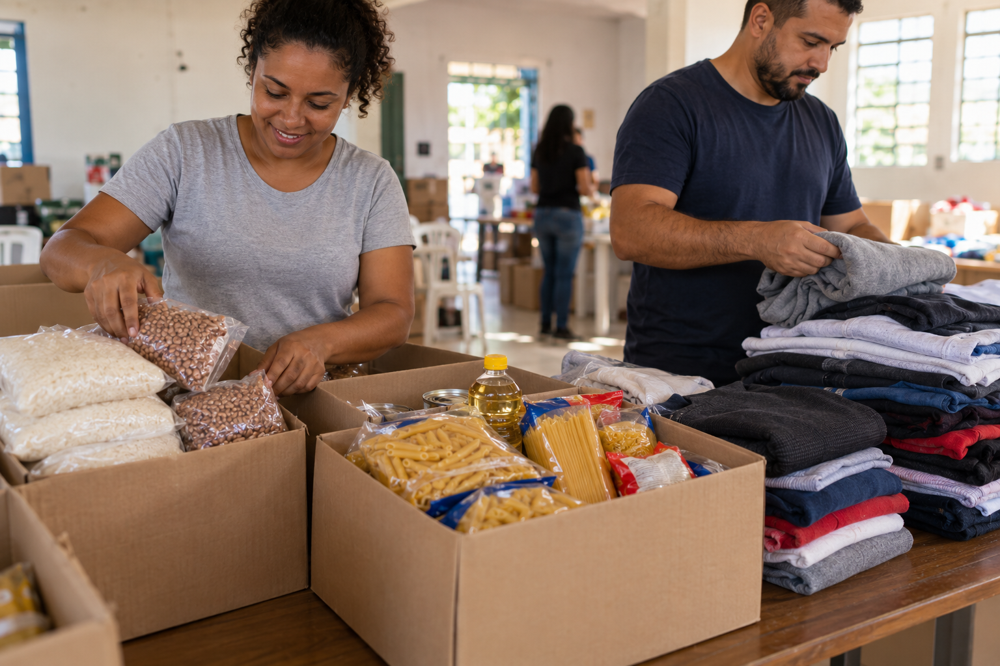

Nossos projetos
Conheça nossas iniciativas e escolha como você pode contribuir.

Campanhas
Como fazer uma doação financeira
Entre em contato pelo e-mail contato@lacossolidarios.org para solicitar os dados de doação e conhecer as campanhas em andamento.
Como participar como voluntário
Voluntários ajudam na divulgação das campanhas, na organização das doações e na preparação das entregas.
Para manifestar seu interesse, preencha o cadastro de voluntário.